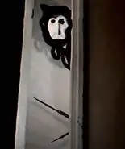

Description:
The Locust is a lanky, long-looking creature, with a disturbing smile and bizarre-looking hair. This monster is explained in multiple videos of Doctor Nowhere as a monster who is "starving." He travels through screens. He will ask for help, then violently break the screen and get out. He will then hunt its target until he has eaten its organs. He can also use his previous victims to contact other people, pretending to be them, even though it is him. He is still a mysterious creature but well-established, although he remains very mysterious.